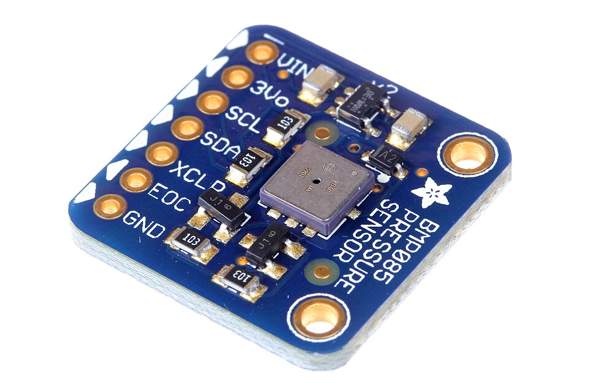

This book
This is an embedded-rust tutorial using the esp32-c6 board.
The book aims to be self-contained, but brief reading material will be suggested.
The goals are to show:
- The basics of the board and hardware components,
- How to start and configure new projects,
- What we can do with a board.
so that you can do projects independently afterwards.
Prior Knowledge
Rust knowledge is assumed, but no embedded experience is required. The content was written for Unix (Linux, MacOS).
Hardware
The esp32-c6 board is available on Mouser, Aliexpress and other retailers. It should look similar to:
Other required hardware:
-
USB-C cable to link your computer and the board.
- The cable has to support data transfers and not be power-only.
-
One resistor, 2 jumper wires, one LED, one breadboard. These are needed for Blinky and Handle Input chapters.
Source
The source for the book and code exercises is at https://github.com/micrors/esp32-c6. To get started, clone repo and then change directory:
git clone https://github.com/micrors/esp32-c6 micrors_esp
cd micrors_esp
Repository contents:
book/: markdown sources of this book.exercises/: code examples and exercises.
Embedded Basics
The board (or DevKit), as shown earlier, is:
The board then, is the whole item. Its main parts are:
- The printed circuit board (PCB): the flat fiberglass sheet supporting all electronic components.
- The components: items laid on top of the PCB. They interconnect through traces which are thin copper wires. Examples of components: module, USB ports, LEDs, GPIO-pin headers.
So we have the flat piece with the components laid on top. Before zooming further, this is the hierarchy we will be exploring in the definitions (the outer levels contain the inner levels)
- Board
- Module
- SoC (or MCU)
- CPU, ROM, SRAM,
- Advanced Peripherals: Wi-Fi, RF (Bluetooth).
- Peripherals: GPIO, UART, I2C, ADC
- Other Items
- SoC (or MCU)
- Components: USB, LED, GPIO pin-headers
- Module
The description below aren't technical, they are just an overview.
Module
The module is the big square labelled ESP32-C6-WROOM (or some variant). It takes almost half the board.
Within it, a module has a few more items, the key one being the SoC, short for System on a Chip. We can't see the SoC unless we take the module's lid off, but here is how it looks within:
Image from implFerris/esp32-book under CC-BY-SA 4.0
SoC
The SoC includes CPU, ROM, SRAM, advanced peripherals and peripherals. It's an all-in-one integrated circuit or chip.
The advanced peripherals are those making SoC an advanced MCU, like Bluetooth and Wi-Fi.
The peripherals are parts of the SoC placed on the periphery of the CPU, extending its capabilities. For example: GPIO, UART, I2C, SPI, DAC, ADC. We can't see them directly.
The GPIO peripheral is "broken out" into the pin headers at each side of the board. See the [user-guide] schematics and tables for the board.
SoC or MCU?
In this tutorial we consider System on a Chip (SoC) and Micro controller unit (MCU) synonyms. Wikipedia defines MCU and disambiguates SoC or MCU very well (I modified it slightly):
A microcontroller (MC, uC, or μC) or microcontroller unit (MCU) is a small computer on a single integrated circuit. A microcontroller contains one or more processor cores along with memory and programmable input/output peripherals.
In modern terminology, a microcontroller is similar to, but less sophisticated than, a system on a chip (SoC). A SoC may include a microcontroller as one of its components but usually integrates it with advanced peripherals like a graphics processing unit (GPU), a Wi-Fi module, or one or more coprocessors.
In very simple terms, a module contains the SoC which is just an advanced MCU.
Putting it all together
An explanation of how it all comes together is in the micro:bit v2 book, a modified version is provided below:
Our MCU (or SoC) has tiny metal pins sitting right underneath it. These pins and the board components are wired via copper traces, the little "roads" on the board.
The MCU can be programmed to change the electrical state of the pins. The pins change the electrical state of the traces, ultimately controlling the components. So the MCU can control the components.
For example, by enabling or disabling electrical current to flow through a specific pin, an LED attached to that pin (via the traces) can be turned on and off.
Suggested reading
- esp32-c6 user-guide. It describes the board components, peripherals, and pinouts.
- The SoC datasheet, especially the product page, and the features (first 3 or 4 pages).
- [esp32 tutorial] page on the distinction between DevKit (or Board), Module and SoC.
Set Up
Now it's time to connect the host computer to the development board.
- Plug one end of the USB to the computer's USB port.
- Plug the other end to the board's esp32c6-tagged USB port (or you may see a USB tag.)

Board-Laptop USB-link (white cable).
Note
The extra USB port is UART or ch343-tagged. It is used to communicate with the UART peripheral within the MCU. Both ports can be used for flashing and powering, but only esp32c6 can be used for debugging.
Check connection
To ensure our OS can detect the board, list the devices with one of these approaches:
-
With
lsls /dev/tty*usb* # MacOSls /dev/ttyACM* # Linux -
With
lsusblsusb | grep JTAG # Bus (...) USB JTAG/serial debug unit (...)
Install Software
Now that the board is seen by our OS, let's install all needed software.
Rust Tools
-
Install the Rust toolchain following the steps in https://rustup.rs/
- The Rust Toolchain is
rustupplus many componentscargo,rustc, the compiledstdcomponent and so on.
- The Rust Toolchain is
-
Add the compiled
std-component for our target processorrustup target add riscv32imac-unknown-none-elf -
Add development components:
rustup component add rust-analyzer rust-srcrust-srcis thestd-component's source code, used byrust-analyzer.
Espressif tools
espflash is used for flashing our ELF binary (our program) into the board.
Install espflash with: cargo install espflash
Build dependencies
rustc has compilation backends which do part of the compilation of our code. llvm is one such possible backend (the most common one.)
-
Debian/Ubuntu.
sudo apt install llvm-dev libclang-dev clang -
MacOS. When using the Homebrew package manager, which we recommend:
brew install llvm
Suggested reading
- esp32 tutorial, cross-compiling.
Additional Software
- It's recommended to install
Rust Analyzer, following their guide.
Boilerplate
A few lines frequently repeat, like a mantra througout the examples. It helps a lot to analyse them.
no_std, no_main
no_std, no_main, no_std, no_main, ...
The entry files start with
#![no_std]
#![no_main]
// ...
#[esp_hal::main]
fn main() -> ! { }no_stddisables loading thestdcrate. It only loadscoreby default.no_maintells Rust not to search for amainfunction.- This is handled by
esp_hal::mainmacro.
- This is handled by
Imports
A few imports also repeat througout:
use esp_hal::{main, Config};
use esp_backtrace as _;
use esp_println::println;-
esp_hal: providesmainentry plus useful modules for dealing with peripherals, time, and so forth. -
esp_backtrace: Out of bounds indexing and our ownpanic!calls have to be handled by a panic-handler (otherwise provided bystd).- This crate provides a replacement through the
panic-handlerfeature. - In summary, it handles the
panic!calls, and prints the backtrace (call stack up to that point.).
- This crate provides a replacement through the
-
esp_println: The macroprintln!comes fromstd. We don't usestdsoesp-printlnprovides the macro for us.- Logging backends (
log,defmt) can also be used:
use esp_println::{logger,println}; +use log::{info, trace};- The
logimport isn't needed if we don't use these macros.
- Logging backends (
App Descriptor
The line is:
esp_bootloader_esp_idf::esp_app_desc!();- The board has 2 bootloaders.
- First stage bootloader: written in ROM and can't be changed. It's read first. It loads the second stage bootloader.
- The second stage bootloader needs an application descriptor, which
esp_bootloader_esp_idf::esp_app_desc!();creates for us. This bootloader loads our application.Note
Each time we flash a binary,
espflashincludes a pre-compiled second stage bootloader with default settings, alongside our binary-code.
init
The other line is within fn main() { } namely:
#[main]
fn main() -> ! {
let _peripherals = esp_hal::init(Config::default());
}This line initialises our MCU with default configuration. In their words, for esp_hal::init
Initialize the system.
This function sets up the CPU clock and watchdog, then, returns the peripherals and clocks.
Notice the "returns the peripherals". That's important. The Peripherals struct provides access to all of the hardware peripherals on the chip!
And for esp_hal::Config:
System configuration.
This
structis marked with#[non_exhaustive]and can't be instantiated directly. This is done to prevent breaking changes when new fields are added to thestruct. Instead, use the [Config::default()] method to create a new instance.
Recap
So we have described the macro attributes (like #[main]), the module imports, the app descriptor and board initialisation.
Tip
All the snippets in this page are so ubiquitous that it is useful to memorise them and their role.
Suggested Reading
Hello World
There is a lot to learn, so let's start simple. Our "hello world" is more of a logging practice.
-
Connect the board to your computer and access the first project:
cd exercises/hello_world -
Build, flash, and monitor the project with
cargo run. You should see:.. Commands: CTRL+R Reset chip CTRL+C Exit .. loop..! ..Tip
Try pressing
CTRL+Rto reset, then pressCTRL+Cto exit.The aim here is just run the binary.
Build, flash and monitor?
The .cargo/config.toml includes this config:
[target.riscv32imac-unknown-none-elf] # our processor arch.
runner = "espflash flash --monitor" # for `cargo run`.
Our cargo run is replaced by cargo build && espflash flash <elf_path> --monitor.
This builds and then flashes the binary. Finally, it monitors for logs.
Removing --monitor it won't wait for logs.
Exercise
We already know our code can print information with println! macro. For prettier logs we can use log or defmt. Let's try adding them:
- Take some time to read the code. Do you recognise the boilerplate discussed earlier?
- Try commenting out the line:
So that we can see what it provides. Then uncomment the line.use esp_backtrace as _; - Uncomment the "log lines" in
src/main.rs, - Add the
logdependency toCargo.toml. - The
logcrate logging level is controlled withESP_LOGunder the[env]section in.cargo/config.toml.-
Change the
ESP_LOGvariable to turnoffall logs. Re-runcargo run, to test how it works. -
Try with other levels, for example, with
trace.
-
The examples/hello_world.rs contains a solution.
You can run it with cargo run --example hello_world.
Important
Running the solution requires fixing the log-lines at the bottom of
Cargo.toml.
Suggested Reading
- esp-println crate's docs.
- log crate's docs.
Panic
If something goes very wrong, a program will panic!.
esp-backtrace provides a panic! implementation through the panic-handler feature.
"Handling panic!" here means to print what was executed up to that point (the backtrace), and probably stops code execution as well.
We could use our own panic-handler instead, and no backtrace at all. For example, this one:
use core::panic::PanicInfo;
use core::sync::atomic::{self, Ordering};
#[inline(never)]
#[panic_handler]
fn panic(_info: &PanicInfo) -> ! {
loop {
atomic::compiler_fence(Ordering::SeqCst);
}
}Warning
We need to
use esp-backtrace as _;so that this handler is included in the final binary.
In the exercise below, we configure a profile. Profiles are configurations cargo uses to control compilation. When unspecified, cargo sets sensible defaults for us.
Exercise 1
-
Access the project at
exercises/panic. -
Add all the boilerplate code described earlier.
-
Add a
panic!withinmain.- But remember, it's for irrecoverable errors!
-
Run the code with
cargo run; this uses the development profile.- It outputs debug information into the compiled binary.
-
Then run with release profile
cargo run --release.-
The default
--releasebehaviour excludes debug information and minimises the binary size; the backtrace shows the missing debug information with??.Hello world! ====================== PANIC ====================== panicked at examples/panic.rs:24:5: This is a panic Backtrace: 0x4200252a main at ??:??
-
examples/panic.rs contains a solution. It can be run with: cargo run --example panic --release.
Exercise 2
-
Edit the
.cargo/config.toml:+[profile.release] +debug = true- Now it will emit debug information in the ELF binary file; yet debug info isn't flashed into the target, it is just used to display the backtrace.
- Re-run the program with
--releaseand confirm??:??is now filled in.
-
Try another option:
+[profile.dev] +opt-level = "s"which turns size-optimisation on, and has debug info by default. Run it with
cargo run(no--releaseflag since we want to run the dev profile.)
Recap
- Using
esp-backtrace. - Using
panic!to exit the program on error. - Profiles:
- Tweak debug information on backtrace.
- Optimise binary size.
Suggested Reading
Blinky
We will now create the iconic blinky.
Let's access the project with cd exercises/blinky.
On esp32-c6 board there is no regular LED connected, instead there is an addressable LED which works differently and is beyond the scope of this book.
Instead, we will use a regular LED and a resistor, and build a circuit controlled with the GPIO pin headers.

esp32-c6, wiring the LED
Wire up the board as shown on the previous image:
- Start wiring from
GNDpin header (red wire). - From there to the resistor (220mΩ or larger, without it the LED blows up).
- From the other leg of the resistor to the LED (blue wire).
- Finally, the LED connects to pin-header 7 (the long LED-leg is on 7).
Let's reconsider our boilerplate:
#![no_std]
#![no_main]
use esp_backtrace as _;
use esp_println::println;
use esp_hal::{main, Config};
esp_bootloader_esp_idf::esp_app_desc!();
fn main() -> ! {
let peripherals = esp_hal::init(Config::default());
}And now we ask ourselves:
- Which peripheral can we use to control pin-headers' electric state?
- We can use the
peripherals.GPIOXwhereXis the same number than the pin-header we need. - In this case, it's GPIO7, labelled 7. Always check the pinouts.
Warning
The PCB labels are written below the headers! So GPIO7 is not mapped onto header 6 (as a quick look might suggest), but on header 7.
- We can use the
- Which driver can we use to communicate with it?
- We can use the
Inputand / orOutputdrivers.
- We can use the
Exercise
- Open the file
src/main.rs, take some time to read the code. - Create
OutputConfigwith default configuration.- Hint: it implements
Default.
- Hint: it implements
- Toggle the
ledwith 3500ms delay.
The exercises/blinky/examples/blinky.rs contains a solution.
You can run it with the following command cargo run --example blinky --release.
Handle Input
Using same wiring from the blinky chapter, let's now use external input to make the LED blink.
- Access
exercises/handle_inputin order to editsrc/main.rs.
Warning
This exercise is slightly more involved, in the sense you'll need to add more code. But there is always the solution if it gets too hard.
Exercise
We will use the button labelled BOOT linked to GPIO9 to toggle the LED.
-
As per usual, we will be editing
src/main.rs. -
We first need to fill in the boilerplate. Once that's done, this line might be of help:
// you will also have other `esp_hal` submodules besides `gpio`. +use esp_hal::gpio::{Input, InputConfig, Level, Output, OutputConfig, Pull},You may get inspired by the previous exercises and the boilerplate page.
-
Create an
Output::newpassing GPIO7 peripheral,Level::Highand defaultOutputConfig.- Assign it to the
ledvariable. - Hint: with peripherals initialised, GPIO7 is a field in that struct.
- Assign it to the
-
Create an
Input::newpassing GPIO9 peripheral.- Use default
InputConfig, overwrite withas_pull(Pull::High). - Assign it to the
btnvariable.
- Use default
-
Add the logic inside
loop:- When pressing it should turn the
ledon, and delay it 2 seconds. - Then it turns itself off.
- When pressing it should turn the
The examples/handle_input.rs contains a solution. You can run it with the following command cargo run --example handle_input --release.
Logging - Part 1
What happens if we use the boilerplate, and no logging dependency?
In the src/main.rs we start with:
#![no_std]
#![no_main]
// None of these: esp_backtrace, esp_println, defmt
use esp_hal::{
main,
Config,
};
esp_bootloader_esp_idf::esp_app_desc!();
#[main]
fn main() -> ! {
esp_hal::init(Config::default());
panic!("Welcome.")
}Running cargo run --release, we get:
error:
#[panic_handler]function required, but not found
The panic handler is something we can define, or use a crate. For simplicity, let's use esp-backtrace with that feature, adding to Cargo.toml the following dependency:
esp-backtrace = { version = "0.18.1", features = [
"esp32c6",
"panic-handler",
]}
And to src/main.rs:
// ...
use esp_backtrace as _;
// ...Re-run cargo run --release, and we get a new error:
error: failed to run custom build command for
esp-backtrace v0.18.1... Exactly one of the following features must be enabled: defmt, println
So we add one:
esp-backtrace = { version = "0.18.1", features = [
"esp32c6",
"panic-handler",
+ "println"
]}
And yet, it errors:
error: failed to run custom build command for
esp-println v0.16.1Exactly one of the following features must be enabled: jtag-serial, uart, auto, no-op
This, it seems, would require that we add esp-println, and enable some of those features.
Since auto is a default feature, we can add:
esp-println = { version = "0.16.1", features = [
"esp32c6",
] }
Now, it will run and panic. Yay!
Playing with these dependencies helps get a sense of what they are for. Also, to see how useful the compiler error messages can be.
Print something
So far we've not printed anything, but given esp-println is already there, we only need to use it. Then we can println!("Something") and it should work.
At this step, the code looks like:
#![no_std]
#![no_main]
use esp_hal::{
main,
Config,
};
use esp_backtrace as _;
use esp_println::println;
esp_bootloader_esp_idf::esp_app_desc!();
#[main]
fn main() -> ! {
esp_hal::init(Config::default());
println!("println!");
panic!("Welcome.")
}Using the log crate
We add a few items:
use esp_backtrace as _;
+use esp_println::{logger,println};
+use log::info;
esp_bootloader_esp_idf::esp_app_desc!();
And within main:
fn main() -> ! {
esp_hal::init(Config::default());
+logger::init_logger_from_env();
+info!("SOME INFO!");
println!("println!");
Finally, on Cargo.toml:
esp-println = { version = "0.16.1", features = [
"esp32c6",
+"log-04"
] }
# Manuallu, or use `cargo add log`
+log = "0.4.29"
So now we have learnt how to add a logger, if we need to.
Note
examples/logging_0.rscontains a solution. You can run it with the following command:cargo run --example logging_0 --release. You will need to have the settings above done correctly though!
In the next logging section, we analyse using defmt instead.
Logging - Part 2
Dependencies that may log data provide support to use defmt or log. Previously, we configured a package to use log, so now it will be quicker, but other aspects can be examined.
As a recap:
espflashhas built in support fordefmt,logor none using the-Lflag.esp-printlncan usedefmt-espflashorlog-04features. As their docs state:Using the
defmt-espflashfeature,esp-printlnwill install adefmtglobal logger.esp-backtracecan useprintlnordefmtfeatures, in order to print panic messages and backtraces.
Let's update the package to use defmt.
Exercise
Go to exercises/defmt directory.
-
Update the runner's logger in
.cargo/config.toml:[target.riscv32imac-unknown-none-elf] - runner = "espflash flash --monitor" + runner = "espflash flash --monitor -L defmt"so that
espflashmonitor can decode the format of thedefmtmessages received. -
Update
Cargo.tomlto include the needed features:esp-println = { version = "0.16.0", features = [ "esp32c6", - "log-04", + "defmt-espflash", ] } # (...) esp-backtrace = { version = "0.18.0", features = [ "esp32c6", "panic-handler", - "println" + "defmt", ]} -
Due to the linking process we need to add
defmtlinker script tocargo/config.toml:rustflags = [ # .... + "-C", "link-arg=-Tdefmt.x", ] -
Add defmt to the dependencies, and remove
log. -
Logging level: Use the
defmt::println!and some defmt macros to print a few messages.- When building the app, set
DEFMT_LOGlevel as done forESP_LOGearlier (within.cargo/config.toml, under[env]table). - An alternative to changing
.cargo/config.tomlis usingDEFMT_LOG=<value> cargo run --release; the same is valid forESP_LOG.
- When building the app, set
-
Add a
panic!macro to trigger a panic with adefmtmessage.
Note
examples/logging_1.rscontains a solution. You can run it with the following command:cargo run --example logging_1 --release. You will need to have the settings above done correctly though!
Suggested reading
Short articles that give more context:
- defmt linking process for setting the compilation-time linker up.
- defmt DEFMT_LOG environment variable.
- esp-println logging formats.
Debugger - Set Up
Programs are debugged using:
- Printing value of a variable (e.g.
println!). - Asserting the value of a variable (e.g
assert!). - Writing unit tests.
To access finer execution details, we can use a debugger.
GDB and OpenOCD
Two programs will be needed:
- GDB: with multiarch to support riscv32 architecture.
- Linux:
sudo apt-get install gdb-multiarch. - MacOS:
brew install gdb(it's multiarch).
- Linux:
- OpenOCD: handles the communication with the board.
- The installation is described below.
Download the latest openocd for your laptop architecture from the openocd-esp32 github repo. The repo is a fork of openocd targeted at esp32 boards.
Important
Please, check the commands before executing them.
- For Linux AMD-64:
# Linux amd64. See releases page for other archs. cd ${HOME} # go to home so we download in a visible place. OPENOCD_ZIP_NAME=openocd-esp32-linux-amd64-0.12.0-esp32-20250707.tar.gz DATE=v0.12.0-esp32-20250707 wget https://github.com/espressif/openocd-esp32/releases/download/${DATE}/${OPENOCD_ZIP_NAME} tar -xvf ${OPENOCD_ZIP_NAME} - For MacOS arm64:
cd ${HOME} OPENOCD_ZIP_NAME=openocd-esp32-macos-arm64-0.12.0-esp32-20250707.tar.gz DATE=v0.12.0-esp32-20250707 wget https://github.com/espressif/openocd-esp32/releases/download/${DATE}/${OPENOCD_ZIP_NAME} tar -xvf ${OPENOCD_ZIP_NAME}
Important
Below, it is assumed the output of the command above was a directory named
openocd-esp32.
Modify the PATH
Let's add a path to the PATH variable, by editing the .zshrc or .bashrc file.
Additionally, the OPENOCD_SCRIPTS variable is defined. openocd uses that variable to find the board's configuration.
# add `openocd` to PATH
export PATH=${HOME}/openocd-esp32/bin:${PATH}
# Define openocd scripts/configs location.
export OPENOCD_SCRIPTS="${HOME}/openocd-esp32/share/openocd/scripts"
Then source the profile:
source ~/.bashrc # or ~/.zshrc
Confirm installation with openocd --version. Now to some exercises.
Debugging - Exercises
Now that gdb or gdb-multiarch are set up, let's do some exercises.
- Access
exercises/gdb_hello_world - Inspect the configuration files
openocd.cfg(foropenocd) and.gdbinit(forgdb). - Execute
cargo run, leave out--releaseto use the development profile.- Without it, cargo will remove / optimise lines.
- We should debug with
--releaseto ensure the best outcomes. - But this examples is just to get started.
- Run
gdb -x gdbinit -q(orgdb-multiarchon Linux) in one terminal, andopenocdin another (at the same directory!).- In the image,
_peripheralshas not yet been assigned.gdbstopped execution there. The window at the bottom half is our(gdb)prompt.
- In the image,
- Add a
breakpoint wherea/=2, thenprintthe resulting value. - Exit with
Ctrl+DorCtrl+C.
Suggested Reading
- MB2 article on Debugging.
Intro
This chapter is about communication protocols and peripherals used with them.
A communication protocol is a series of steps that the devices involved agree upon, in order to encode and decode the messages exchanged (communicate).
- Asynchronous serial communication with the UART peripheral.
- I2C serial communication protocol and peripheral.
- SPI serial communication protocol and peripheral.
There are many others! And sometimes devices have their own language and their datasheet must be read. But the ones listed above are very common.
Have fun
Check out any website listing sensors, and without tempting yourself to buy things, look at which communication protocols they use. Here are a few from Wikimedia Commons:
-
Analog to Digital Converter, uses I2C protocol.
-
Barometric Pressure Sensor
oomlout, CC BY-SA 2.0, via Wikimedia Commons
-
Temperature Humidity Sensor (its own protocol)

Ji Hyoung Ryu, Muhammad Irfan, Aamir Reyaz, CC BY 4.0, via Wikimedia Commons
-
Pressure Sensor (SPI and I2C)

{kind=link}
{kind=link}
{kind=link}
{kind=link}
{kind=link}
{kind=link}
{kind=link}
{kind=link}
{kind=link}
UART - Part 1
UART stands for Universal Asynchronous Receiver and Transmitter.
Asynchronous means that they don't have a dedicated clock line, since all it has is two data lines (Rx, Tx in the diagram below). This will be become more clear after learning I2C.
The diagram below shows two UARTs wired for communication; each is connected to a local data bus.
graph LR
subgraph uart2 [UART 2]
direction TB
Tx2
Rx2
end
subgraph uart1 [UART 1]
direction TB
Tx1
Rx1
end
Tx1--> Rx2
Tx2--> Rx1
DB2[Data Bus 2] <--> uart2
DB1[Data Bus 1] <--> uart1
A UART has two data lines: one transmits data (Tx), one receives data (Rx). Each connects to the complementary line on the other UART. For example, the Tx1 line of UART 1, to the Rx2 line of UART 2.
The Data Bus is either where the transmitter reads data from, or where the receiver writes data to.
Communication
Most communication peripherals take the name from the communication protocol, but not UART. So...which protocol does the UART peripheral use?
UART uses Asynchronous Serial Communication which is an "umbrella" or general term. There isn't a subterm / protocol name. So we say: UART uses Asynchronous Serial Communication. How it works for UART is shown in the steps a bit further down.
The "Asynchronous" part was explained in the first paragraphs. "Serial Communication" means sending one bit after another; that is, in series.
-
Example: Sending data from the board to the laptop. This is what happens at a high level:
- The sending-UART's Tx line uses START and END signals to mark when the communication starts and ends.
- A UART device reads a byte from the data bus.
- It serialises it, and wraps it with metadata bits. The whole item is now called a frame.
- Then sends the bits one-by-one to the other device (through the Tx line).
The other UART receives the series of bits (in the Rx line), uses the wrapping bits and places the data bits in the data bus.
Since there isn't a clock line, the transmission rate must be set as a parameter, called the baud rate, in bits per second.
Besides the baud rate, the data, the parity, and the stop bits must be set equal on each device. A mismatch of speed or configuration bits will cause the devices to decode information incorrectly.
As an example:

From Asynchronous Communication by Plugwash (Public Domain)
And the description of the image (slightly modified):
In this diagram, two bytes are sent, each consisting of a start bit, followed by eight data bits (bits 0-7), and one stop bit, for a 10-bit character frame.
The last data bit is sometimes used as a parity bit.
The number of data and formatting bits, the order of data bits, the presence or absence of a parity bit, the form of parity (even or odd) and the transmission speed (frequency) must be pre-agreed by the communicating parties.
The "stop bit" is actually a "stop period"; the stop period of the transmitter may be arbitrarily long. It cannot be shorter than a specified amount, usually 1 to 2 bit times. The receiver requires a shorter stop period than the transmitter.
At the end of each character, the receiver stops briefly to wait for the next start bit. It is this difference which keeps the transmitter and receiver synchronized.
Speed Calculation
With a set up like:
- 8 data bits, 1 parity, and 1 stop bit (10 bits)
- Note: this is called a frame.
- baud rate 115200 bits/second
It will send 11520 frames per second. Since it includes 1 byte per frame (10 bits), it's also 11520 byte per second. Or 11520/1024 to get it in KiB (about 11 KiB/s). That's about 1 short essay per second.
Suggested Reading
- A bit more on UART: this is a short article, only looks long due to the comments section.
UART - Part 2
Consider our boilerplate:
#![no_std]
#![no_main]
use esp_hal::{main, Config};
use esp_backtrace as _;
use esp_println as _;
esp_bootloader_esp_idf::esp_app_desc!();
#[main]
fn main() -> ! {
let peripherals = esp_hal::init(Config::default())
loop {}
}How do we get to use a UART peripheral from there? How do we configure the peripheral? Which configuration options do you expect? Try getting a sense of what to do first (maybe checking esp_hal docs.)
Warning
The pinouts won't help. UART is connected to
UART-USBbridge (a small IC near the USB ports). So when passing thewith_rxandwith_txto the driver, we must choose the GPIOs hardwired to the UART-USB bridge. These are GPIO16, GPIO17. For sending to GPIO-header-pins (those on the sidelines) we could pass any GPIO (but not when using the bridge.)
======!Spoiler Alert!====== (click for a solution)
There are many other details in the main.rs file, but the most critical is to make sense of this snippet:
let uart_config = uart::Config::default()
.with_baudrate(115200)
// ... other settings
let mut uart = Uart::new(peripherals.UART0, uart_config)
// driver^^^^^^^^^ periph^^^^^ config^^^^^^
.expect("Should set up the driver.")
// Route through the UART-USB bridge
.with_tx(peripherals.GPIO16)
.with_rx(peripherals.GPIO17);That is another boilerplate we can think of: init device, grab peripheral, pass it to a driver along with its config.
A list of some of the peripherals is:
# (Most of these are unstable)
GPIO0-23, GPIO27 peripheral singleton
I2C0 peripheral singleton
I2S0 peripheral singleton
LEDC peripheral singleton
RNG peripheral singleton
SPI0-2 peripheral singleton
TIMG0-1 peripheral singleton
UART0-1 peripheral singleton
USB_DEVICE peripheral singleton
WIFI peripheral singleton
Exercise
- Access
exercises/uart/src/main.rs. The comments within will guide you through. - If not installed install
screen(for examplesudo apt install screen). - Before running it, note that we exit
screenwithCtrl+a+k(then pressingywhen prompted for it). - After flashing the board (any USB port) connect it through ch343 (or UART) tagged port.
- Run
screen <device_path> <baud_rate>.<device_path>is probably/dev/ttyACM0on Linux and/dev/tty.usbmodem0MacOS.- To be sure, list them with
ls /dev/tty*and try to figure out which one is the board. <baud_rate>must match the rate in the code. For example115200.
- Remember to press the RESET board button once.
- Try the echo server by typing in the keyboard, and send with Enter key.
Note
A solution is provided in
examples/uart.rs.
Imagining a projects
The esp32-c6 board has 2 UARTs: UART0 and UART1.
Technically, we could use UART0 just as we did, and UART1 could other GPIOs connected to GPIO-header-pins. By linking this to USB-UART converter and this in turn to a laptop, we could chat.
Two laptops could chat via the board.
Suggested Reading
- This is a good time to check
esp_hal, especially their peripherals section, and anything you find interesting.
I2C
I2C (inter-integrated communication) is a protocol and also a peripheral. We are concerned with the protocol.
"inter" in the name refers to within the board, "integrated" refers to integrated-circuits. In other words: communication between multiple integrated circuits within a board (or short distances).
Yet, devices supporting I2C need hardware that understands the protocol rules. Here, we will focus on its usage and most relevant concepts.
Note
An integrated circuit (IC) is an extremely packed, microscale version of a circuit. We could build one with wires, resistors and other components (and tons of effort).
ICs are the "black squares" in the PCB, but are not always visible, for example those within the MCU, or inside a sensor.
I2C is within the Synchronous Serial Communication umbrella:
- It is Serial because it transmits one bit at a time.
- It uses two lines: a serial clock-line (SCL) and a serial data-line (SDA).
- The SCL makes it a synchronous protocol.
The complete diagram is in this document (section 2.1), but a similar one from Wikipedia is shown below:

By Tim Mathias - Own work, CC BY-SA 4.0, Link
-
SDA is the Serial Data line, the road data travels on (in any direction). SCL is the Serial Clock line, which times when to read-from or write-to SDA.
-
The Vdd line pulls up the voltage in the SDA and SCL lines. There is a GND line as well, omitted here.
-
All the coloured blocks are devices, 3 can be targets only, one can be controller only.
µCmeans microcontroller, and Rp are resistors.
The last bit of terminology are the roles:
- Controller (formerly master): initiates communication. Microcontrollers are always in the controller role.
- Target (formerly slave): the target of the controller. Most devices –except MCUs– are targets.
And the modes: whichever the role is, a device can either be the receiver or the transmitter of data.
Communication
The high level view of the protocol is:
- A controller broadcasts START bit.
- It then broadcasts a target device address (usually 7 bits).
- Then sends a single bit where 0 receiver, 1 means transmitter.
- If the broadcasted address matches the ID of a target, the target replies with an acknowledgement and the communication starts.
- Now 8 bits of data are sent (either direction). The receiver always sends an acknowledgment bit.
- This step can repeat many times.
- No other device will transmit data during this time. It's "locked".
- Finally the controller broadcasts a STOP bit, and the bus is unlocked.
Here, most bits are sent through SDA, but the SCL also helps define when communication starts and ends, and times when to read from SDA.
The speed of the communication is a bit faster than UART's deppending on the mode, in the order of 10 KBps to 100 KBps.
For curiosity
- Search for "OLED I2C", or just any sensors. Many will support this or some of the already-learnt protocols. For I2C there will be a Vdd, GND, SDA, SCL lines, as expected.
- Don't buy more stuff! It's just to learn. You may even have some sensor supporting I2C already.
Suggested Reading
- I2C Protocol: explaions the protocol in a bit more detail than done here.
- Texas Instruments I2C subsection 2.1 (specially the schematic they have is quite good).
GDB Commands
GDB basic commands, classified with respect to their purpose.
Program Flow
nextstep one line over.continueorc: continue executing up to next break point.break fn_name: break point at function name.- There may be many with same name. So we need the path.
- For example:
break gdb_hello_world::__risc_v_rt__main
- For example:
- There may be many with same name. So we need the path.
break lineno: break point at line number of currently-focused file.- Example:
break 19, orbr 19.
- Example:
break my_file.rs:lineno: examplebreak main.rs:17.monitor reset halt: restarts and halts it.load: if we only usecargo build, then we canflashusingload.- Within
gdbtypeload. It'll flash the file to the MCU.
- Within
Layout
layout src: shows source code and CLI.layout asm: shows assembly source and CLI.tui disable: to disable the layout.
Overviews
info break: to show breakpointsinfo locals: to show variables.print x: to print variablex. Alsoprint &xprints the address ofx.listorlist main: will show our program with numbered lines.
Further reading
- Discovery MB2 - UART a section with more detail than the one in this book.
- TI I2C section 3 on the protocol could be of interest.
Other useful pages
- Awesome ESP Rust
- esp-rs community on Matrix